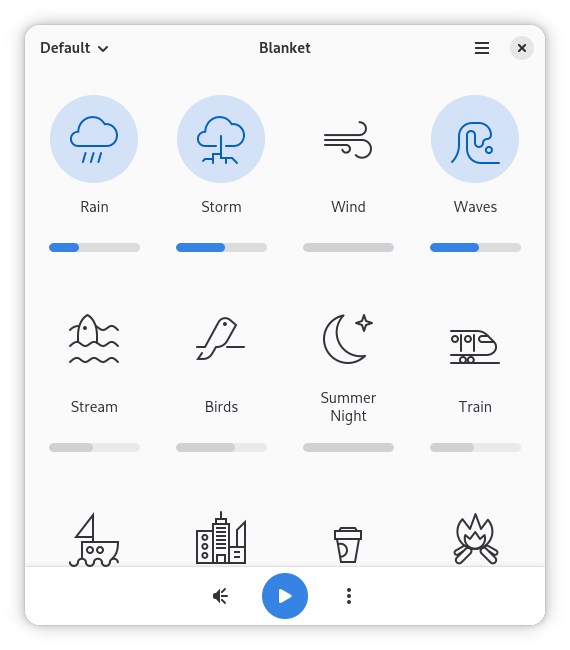
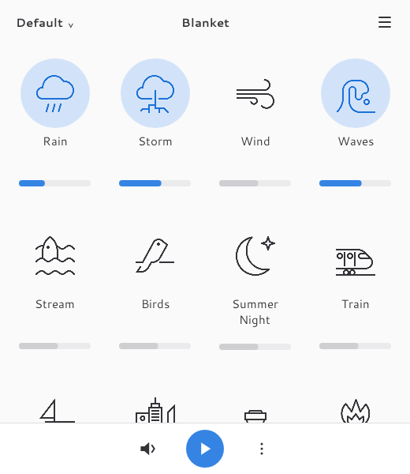
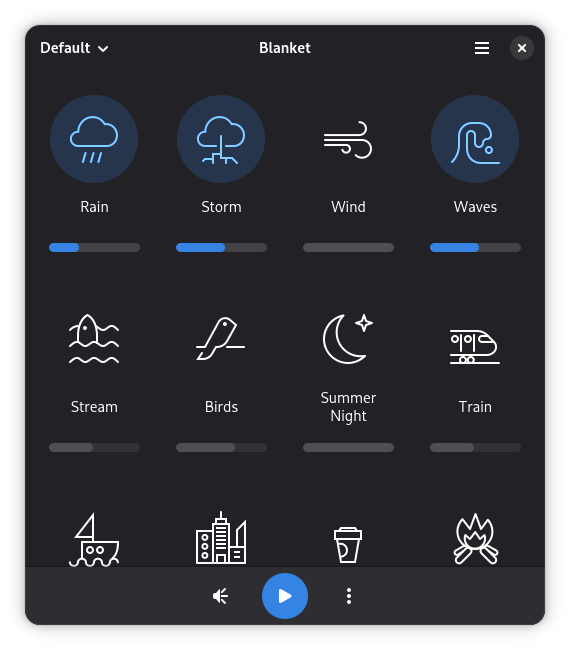
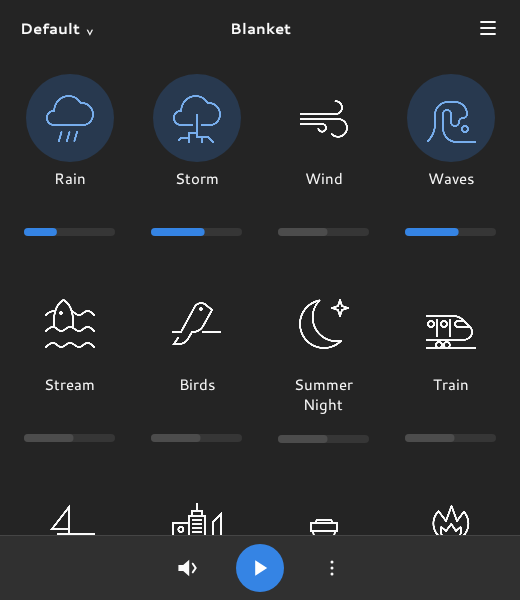
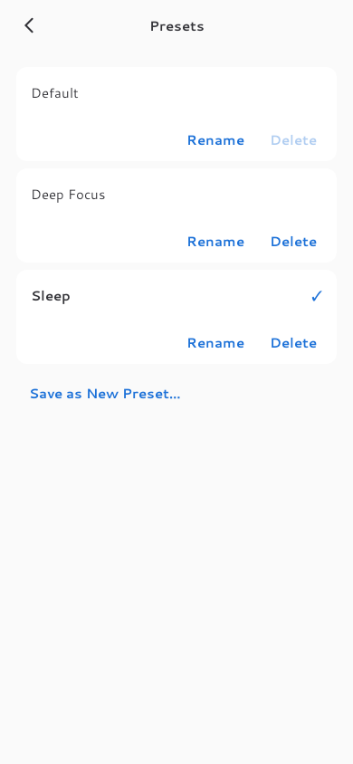
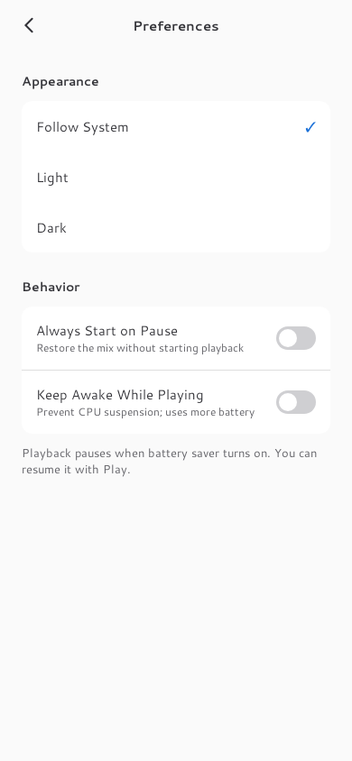

Blanket, translated to Android
Original GNOME screenshots beside native Compose renders from Robolectric. The Android captures use a 520 × 600 dp viewport for comparison. These are test renders, not photographs from a phone.
Light theme


Dark theme


Original sound-icon drawings, Cantarell typography, blue active circles and slider tracks are retained. Android uses touch-sized controls and dedicated preset/preferences pages. Window chrome and mobile system bars differ.
Presets and preferences


Also checked at phone and tablet widths and 150% text size. Audio continuity, OEM background behavior and real lockscreen controls still require a phone.